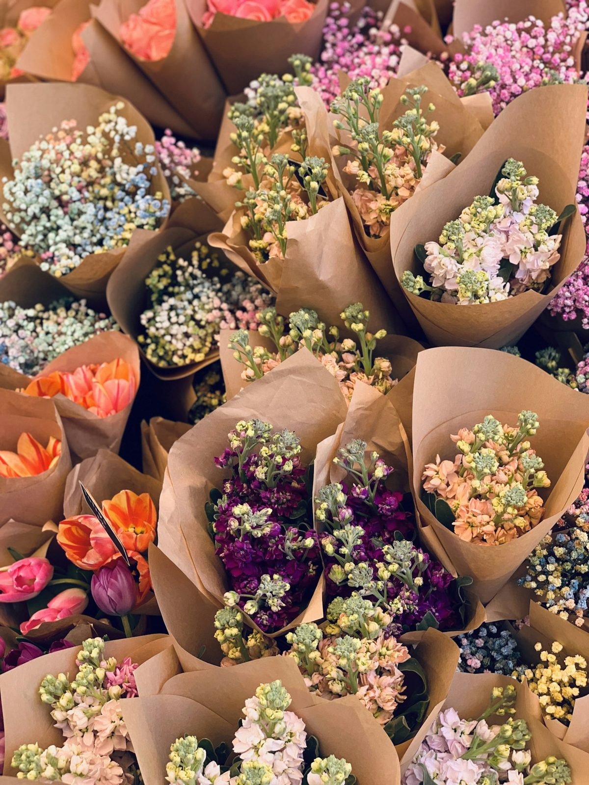
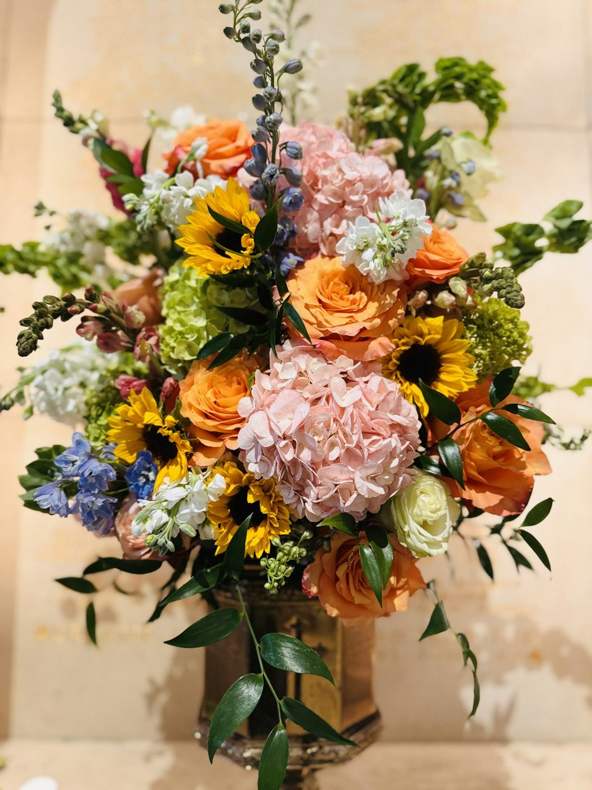
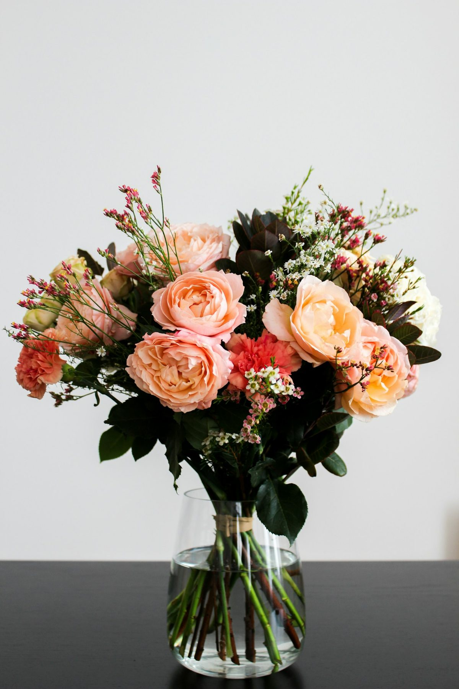
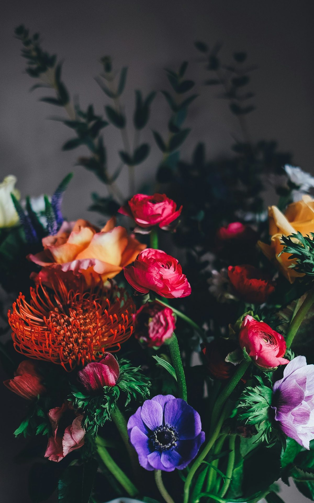

ESCOLHA. LEVE. FLORESÇA.
Boutique
Floral
Flores e folhagens avulsas para criar seus próprios arranjos e deixar a casa com o seu jeito.
Montar meu buquêFLORES, AFETO & BOAS SURPRESAS
Para celebrar, agradecer ou só dizer “lembrei de você”. Flores da estação e presentes feitos com carinho, do nosso jeito para o seu.
Encontre seu presente Conheça nossa curadoria
NOSSA SELEÇÃO
Escolha o começo.
A gente cuida dos detalhes.
Fotos de referência. Cada composição é única e segue a disponibilidade das flores. Valores do material enviado, sujeitos à confirmação.

O NOSSO JEITO DE FAZER
Recebemos flores frescas e fazemos uma curadoria semanal. As espécies e as cores mudam; o cuidado com cada composição continua.
Um tamanho, um estilo, um jeito de presentear.
Flores favoritas, cores que prefere evitar e palavras que quer enviar.
A equipe confirma as flores disponíveis, o valor e o horário antes de preparar.
JÁ FLORESCEU POR AQUI
Composições que já saíram
do nosso ateliê.
Fotos ilustrativas. Composições do portfólio, sob consulta. Toque em uma foto para usá-la como inspiração.
DO NOSSO ATELIÊ
Para presentear sua casa.
Para fazer parte da rotina.

ESCOLHA. LEVE. FLORESÇA.
Flores e folhagens avulsas para criar seus próprios arranjos e deixar a casa com o seu jeito.
Montar meu buquê
UM CARINHO QUE CONTINUA
Arranjos escolhidos pela nossa curadoria para trazer flores à sua rotina, à sua casa ou ao seu espaço de trabalho.
Quero flores toda semanaExperiências ilustrativas desta demonstração. Disponibilidade, datas e condições seriam definidas pela floricultura.
NOSSO JEITO
Flor fresca.Uma floricultura pensada para transformar o ato de presentear: flores, arranjos e pequenos detalhes que aproximam pessoas e marcam momentos.
Conheça nossa curadoriaNÃO PRECISA DE UMA DATA ESPECIAL
CADA DETALHE, NO SEU TEMPO
Tudo o que a equipe precisa acompanhar hoje.
Encontre um pedido e acompanhe cada etapa.
Veja sinais, pagamentos completos e o que falta receber.
Prepare, confira e acompanhe cada presente.
Pause um produto e veja a disponibilidade mudar na loja.
A disponibilidade do catálogo é ilustrativa. Confirme as flores antes de aceitar um pedido.
Floricultura
Aguarde a loja confirmar a disponibilidade e o valor final antes de pagar. Esta prévia não gera cobrança nem confirma pagamento.